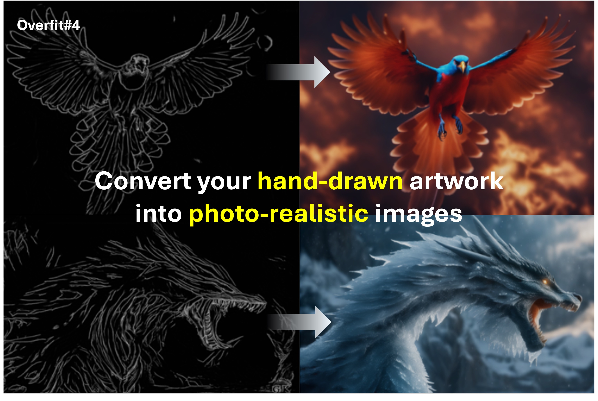
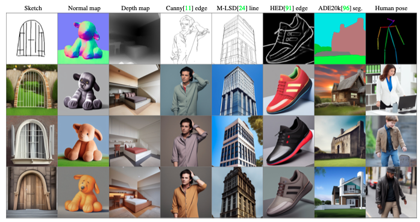
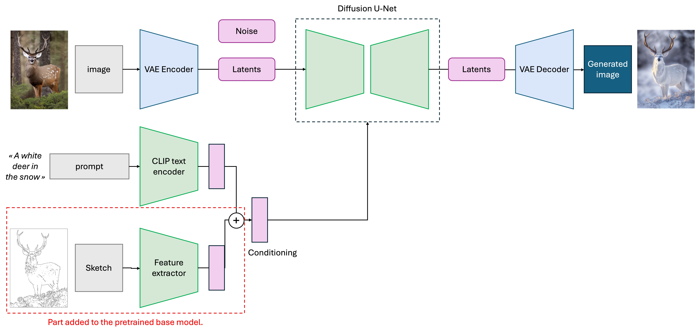
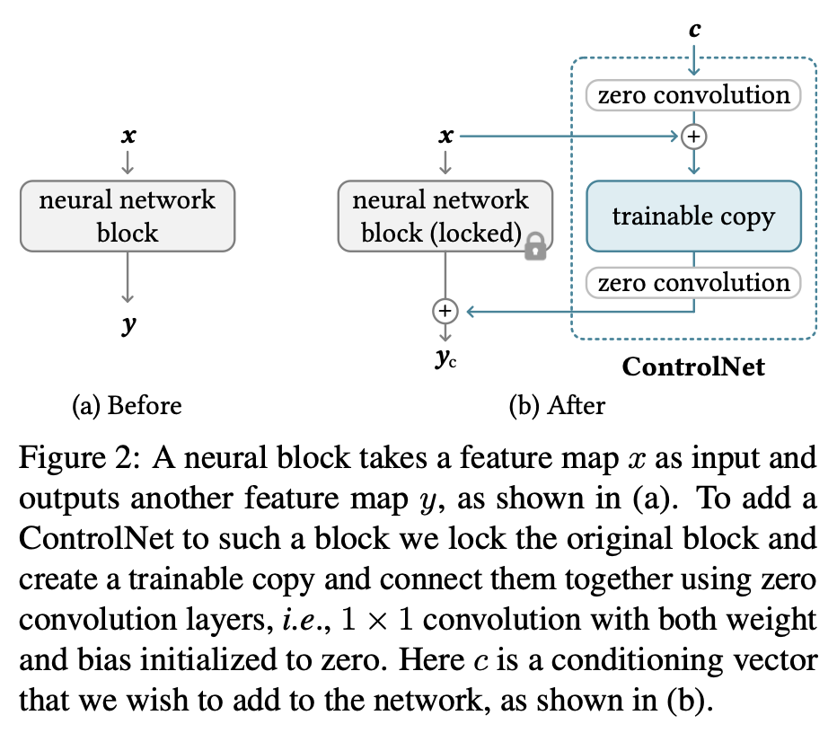
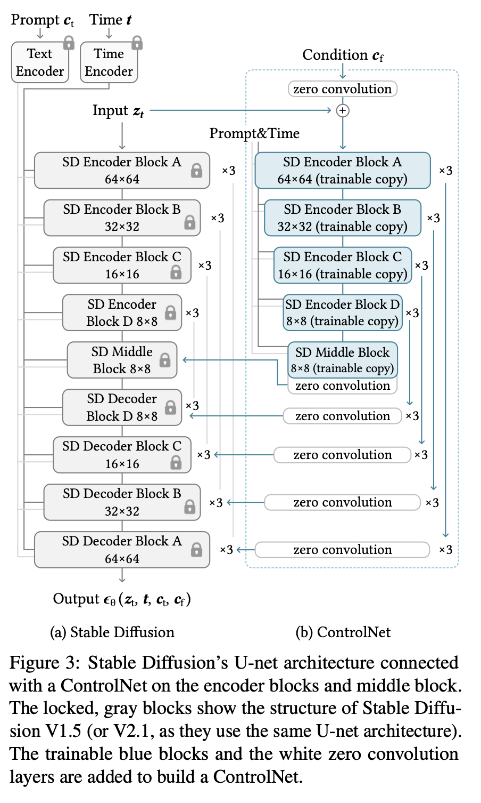
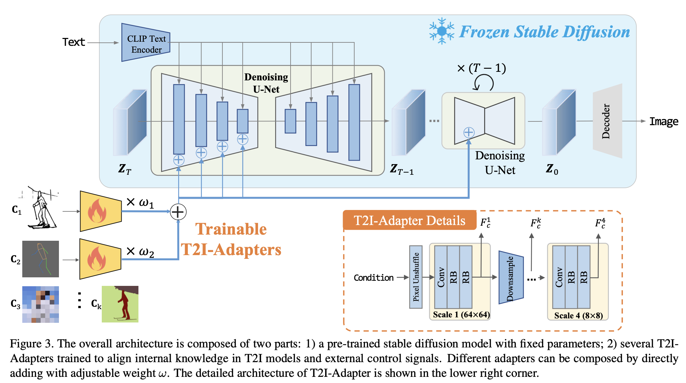
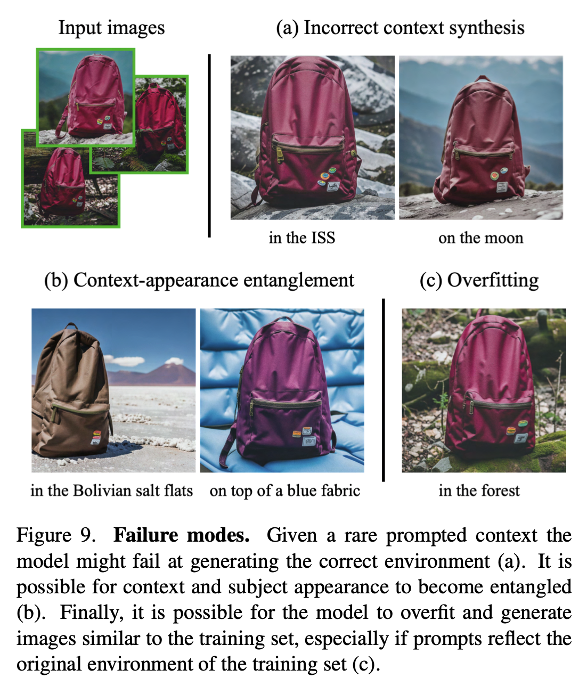

Overfit#4: All the techniques to control your text2img models: ControlNets, T2I-Adapters, Dreambooth ...

Table of content
- Motivations
- Why traditional finetuning doesn't work
- Conditioning techniques: ControlNets, T2I-Adapters
- Learn a new object or person: Dreambooth
Motivation
Text-to-image models have shown impressive generation capabilities and give satisfying results when you have a vague idea of the image you want to create. But, if you have a really precise idea of what you want (a sketch for instance), it is often hard or even impossible to constrain the model through the text prompt condition. Whatever how verbose your instruction is, it feels like you can't fully control the model ...
That behavior is inherently correlated to the way such text2img models are trained. To convert your text instruction into guidance, most models use multimodal embedding models (like CLIP from OpenAI). Yet, even if they excel at extracting semantics, they have a poor understanding of composition, i.e. the way objects are placed in the image. That is why the model tends to ignore your composition instructions.
What would our dream controllable txt2img model look like?
We would like a model that:
- builds on top of our favorite pre-trained models (Stable Diffusion, DALLE ...), so we don't retrain a model from scratch, and can instead leverage their general knowledge learned from massive pre-training datasets
- can take as input one or multiple conditioning modalities like semantic segmentation maps, sketches, depth maps, human poses, canny edge images ...
- and MOST IMPORTANTLY can be trained on SMALL datasets without overfitting or catastrophic forgetting issues, as we may not have massive datasets at our disposal.
Hopefully, some clever people already answered this question for you. Let's dive in! 🐠

Why finetuning doesn't work
If you are familiar with Deep Learning, you might think:
"That's obviously a simple finetuning task. Add a few layers to your network to take the conditioning image as input, add the condition embedding with the text prompt embedding, and train the model on your small dataset. Easy."
And I do agree, that is almost a finetuning situation. But there is one big issue here: you will need a lot of data and a lot of computing power. For instance, Stability AI (the team that released Stable Diffusion) finetuned a SD-v2 model on depth maps. Their training required 12M images and thousands of GPU A100 training hours on an Nvidia GPU cluster. 💸💸💸
And their method worked because they had a big finetuning dataset. What if you replicated their work with a dataset that is \(\times 100\) smaller? Your model will instantly overfit to the finetuning dataset, as shown in literature.
Finetuning is a dead-end, except for a happy few. We need something smoother and cheaper than finetuning.

Conditioning techniques
This issue pushed research to find out parameter-efficient methods to learn a new conditioning input, without losing the power of the txt2img pre-trained model.
In February 2023, within a one-week time frame, two distinct teams from Standford (USA) and Tencent (China) published papers with similar ideas, ControlNets1 and Text2Image-Adapters2 (T2I).
ControlNets
ControlNet is a recipe to finetune txt2img models into learning a new condition. It is not a model in itself, as the architecture varies depending on the pre-trained model you want to finetune.
The key idea behind ControlNets is to duplicate the model into (1) a frozen original model and (2) a trainable copy. The trainable copy will learn to take the condition \(c\) as an additional input. As its feature maps have the same shape as the original network, we will add them to the original feature maps to control the generation process. Note that the condition \(c\) is the output of a feature extractor - usually a CNN (not represented in the figure below), that must be trained too.

I see Zero convolutions in the figure. What are they? What's their purpose?
Zero convolutions are convolutional layers, with \(1\times1\) kernels. According to the authors, their role is to stabilize the training by reducing the gradient noise. In fact, the \(1\times1\) kernel weights and biases are initialized to zero, such that, at the beginning of the finetuning, the trainable copy has no impact, so the system ignores the copy model.
Then, as the training goes on, the zero-conv layers slowly learn to guide the frozen network, with the condition \(c\).
The previous figure was pretty conceptual, here is what it looks like in practice on a Stable Diffusion architecture:

As you can see, the authors duplicated only half of the U-Net model (the encoder part of the U-Net, ~25% of the parameters) and added the conditioned feature maps in the second half (the decoder part of the U-Net). They claimed it gave better performance and reduced the computational cost.
ControlNets also have some cool side properties like additivity, meaning that you can use multiple ControlNets (depth maps, segmentation maps ...) in parallel and sum their outputs to control the image generation. But keep in mind that each conditioning copy adds a 25% computational cost at inference time ...

It sounds cool, but we end up training a model still 25% as big as the original one. And the inference now costs 125% of the original resources. That is not such an improvement.
I totally agree, I was also quite skeptical at first. It feels like we don't really solve our initial problem and that we could use finetuning instead.
Surprisingly, the ControlNets approach is far more computationally efficient compared to direct finetuning. Do you remember the Stability AI SD-V2 depth-2-image model example I mentioned earlier? With similar performance, ControlNet's authors trained SD-v2 on the same depth conditioning but only used 200k training samples, one single NVIDIA RTX 3090Ti, and 5 days of training.
Their guess is that freezing the model prevents overfitting and catastrophic forgetting. It also preserves the general capabilities of the pre-trained model, letting the trainable copy focus on one job : guiding the inference. Moreover, the zero convolutions enable smooth training, as the twin network does nothing at the beginning, and then progressively guides the pre-trained network.
👉 To sum up ControlNets: below are some cool examples of their conditioning capabilities.


T2I-Adapters
ControlNets are great, but still expensive as they require around 25% of RAM compared to full-weight training. Can we do it cheaper? Yes, using Text-2-Image (T2I) Adapters.
T2I-Adapters work like the ControlNet recipe. First, freeze a pre-trained model (ex. Stable Diffusion). Then add some conditioning trainable feature extractors. Their intermediate feature maps should have the same shape as the frozen model's, so we can add them together (so far it is the same as ControlNets).
But the key difference is that the trainable part is no longer a copy of the pre-trained model, but a simpler CNN with Residual blocks.
This simpler architecture requires much less resources as the trainable model is much smaller.

What are the pros and the cons?
- T2I-Adapters use around 50% less weights, so they are cheaper to train (~77M parameters for an 800M Stable Diffusion model).
- The image quality is similar to ControlNets, maybe slightly worse (blurry edges sometimes).
- Like ControlNets, one can use multiple Adapters simultaneously by summing their inputs.
- The only weird fact about them is that the authors used 4 32GB GPUs during 3 days to train their Adapters, which is more GPU hours than in the ControlNet paper. Which is quite surprising from my point of view.
Fun fact: The main author of the T2I-Adapter's paper is an intern at Tencent 🤯
ControlNets and T2I Adapters are the same
To wrap up, these two solutions are basically twin approaches.
ControlNets are bulky because they copy the pre-trained model to leverage its pre-training knowledge in the conditioning net. T2I-Adapters are lighter but learn from scratch.
I guess the key takeaway is to freeze the pre-trained network - to preserve its power - and to train hyper-networks to "control" the big network, rather that re-training the whole model from scratch.
Learning a new single concept/word
What if you are NOT interested on adding a condition, but rather on adding a new concept to the network?
For the sake of explanation, let's say you want to generate multiple pictures of your favorite [BAG] in random places/contexts. Stable Diffusion has never seen [BAG] before (except if it is a famous bag, which is highly improbable), so it needs to learn the concept [BAG], from a few images only.
A simple approach is to finetune the model on a few images, such that it learns an identifier token for your concept. Sadly, many experiments showed it often leads to overfitting and to language drift (catastrophic forgetting).
👉 Usually researchers choose a rare token like [V] to represent the concept. For more coherence with literature, I will now use [V] instead of [BAG].
Hopefully, researchers found out some smart workarounds, like 🌟 DreamBooth35 🌟.
The key idea of Dreambooth is to finetune the diffusion U-Net and the text2embedding model to learn a new token for your concept by coupling it to a class that is a coarse synonym of your concept. For instance, instead of learning on text labels like "[V] in the Grand Canyon", "[V] in the city of Versailles" ... you would instead train the network on descriptions like "a [V] backpack in the Grand Canyon", "a [V] backpack in the city of Versailles". This helps the model create an identifier token, using some prior.
Yet, the authors of Dreambooth noticed two issues. First, the model tends to forget the prior class you coupled with your [V] token, here it would be "backpack". Second the model tends to generate images of the prior class that are less diverse.
To counterbalance concept overwriting, they add a regularization term to the finetuning loss, to ensure that the network keeps its generated images of the prior concept ("backpack") as diverse as possible. To do so, they simply generate some random images of backpacks with the pre-trained network and feed them as training samples during finetuning.

🔥 Now that the model knows the new concept, let's have fun.
As you can see in the pictures below, Dreambooth achieves some impressive results when coupling your concept with others. For instance, it enables image editing (changing the color of a car) or concept mixing (creating animal hybrids). It's simply mind-blowing: the model learned a concept from a few images (~3-5).
Dreambooth is not perfect either, the paper mentions some pitfalls. For instance, it tends to learn the background as a part of the concept, so it poorly generates backgrounds different from the ones in your images.
👉 Dreambooth is definitively an approach to consider if you want to generate marketing images of a product.


Other techniques exist to learn a single new concept
Dreambooth is not the only approach to learn a single new concept. For instance, an intern at NVIDIA proposed Text Inversion 4, a fairly similar technique that freezes the diffusion model and only finetunes the text2embedding model, to learn a representation of the new concept. Text inversion is cheaper, but performs slightly worse.
Takeaways on Dreambooth
- Couple your concept with one that the pre-trained model already knows, to leverage prior knowledge
- Enforce image diversity with a regularization term
Conclusion
For a year now, companies have been all about LLMs. Diffusion Models were left behind because they are harder to control, compared to their text siblings (easy to control with some prompt engineering). Maybe Control Nets, T2I-Adapters, and Dreambooth pave the way toward real-world use cases, especially in creative departments (bye-bye Photoshop?).
Yet, giving more control to such models is also an open door to deep fakes. Based on the increasing number of NSFW finetuned models, I tend to think that the image generation community seems much less concerned about aligning such models.
Some companies like DeepMind published techniques to watermark their pictures to help discriminate the truth from fake. But will it be enough?
-
ControlNet paper: Lvmin Zhang, Anyi Rao, Maneesh Agrawala, "Adding Conditional Control to Text-to-Image Diffusion Models" (2023) ↩
-
Chong Mou, Xintao Wang, Liangbin Xie, Yanze Wu, Jian Zhang, Zhongang Qi, Ying Shan, Xiaohu Qie, "T2I-Adapter: Learning Adapters to Dig out More Controllable Ability for Text-to-Image Diffusion Models" (2023) ↩
-
N. Ruiz &al., "DreamBooth: Fine Tuning Text-to-Image Diffusion Models for Subject-Driven Generation" (2023) ↩
-
Rinon Gal & al., "An Image is Worth One Word: Personalizing Text-to-Image Generation using Textual Inversion" (2022) ↩